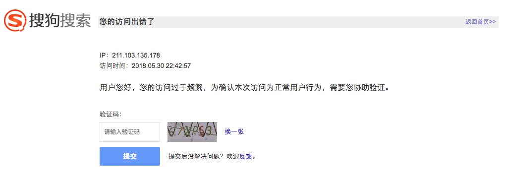

14. 使用代理抓取信息实战
14.1 实战目标：
本节目标是利用代理爬取微信公众号的文章信息，从中提取标题、摘要、发布日期、公众号以及url地址等内容。
本节爬取的是搜索关键字为
python的，类别为微信的所有文章信息，并将信息存储到MongoDB中。URL地址：http://weixin.sogou.com/weixin?type=2&query=python&ie=utf8&s_from=input
14.2 准备工作：
- 首先对要爬取的微信公众号的文章信息进行分析，确定url地址。
- 分析要爬取的信息加载方式，确定属性普通加载（在响应里使用xpath或css解析）。
- 分析如何获取更多页信息的爬取。就是如何跳转下一页。(没有登录的用户只能看到10页，登陆后才可看到其他页)
- 本次案例需要使用的Python库：Scrapy、requests、pymongo。
- 在MongoDB中创建一个数据库
wenxin，让后在此库中创建一个集合wx，最后开启MongoDB数据库
14.3 具体实现：
① 创建项目
- 首先新建项目，名为weixin：
scrapy startproject weixin
- 进入项目weixin目录下，创建一个Spider（爬虫类wx）：
cd weixin
scrapy genspider wx weixin.sogou.com
- 进入settings.py的配置文件：将ROBOTSTXT_OBEY改为false，忽略爬虫协议
ROBOTSTXT_OBEY = False
② 定义Item类
# 定义信息封装类（标题、摘要、公众号、时间、URL地址）
import scrapy
class WxItem(scrapy.Item):
# define the fields for your item here like:
collection = ‘wx’
title = scrapy.Field()
content = scrapy.Field()
nickname = scrapy.Field()
date = scrapy.Field()
url = scrapy.Field()
③ 解析页面
- 进入spider/wx.py文件中编写，代码如下：
# -*- coding: utf-8 -*-
import scrapy
from weixin.items import WxItem
class WxSpider(scrapy.Spider):
name = 'wx'
allowed_domains = ['weixin.sogou.com']
start_urls = ['http://weixin.sogou.com/weixin?query=python&type=2&page=1&ie=utf8']
def parse(self, response):
#解析出当前页面中的所有文章信息
ullist = response.selector.css("ul.news-list li")
#遍历文章信息
for ul in ullist:
#解析具体信息并封装到item中
item = WxItem()
item['title'] = ul.css("h3 a").re_first("<a.*?>(.*?)</a>")
item['content'] = ul.css("p.txt-info::text").extract_first()
item['nickname'] = ul.css("a.account::text").extract_first()
item['date'] = ul.re_first("document.write\(timeConvert\('([0-9]+)'\)\)")
item['url'] = ul.css("h3 a::attr(href)").extract_first()
print(item)
# 交给pipelines（item管道）处理
yield item
#解析出下一頁的url地址
next_url = response.selector.css("#sogou_next::attr(href)").extract_first()
#判断是否存在
if next_url:
url = response.urljoin(next_url) #构建绝对url地址
yield scrapy.Request(url=url,callback=self.parse) #交给调度去继续爬取下一页信息
④ 存储结果
import pymongo
class MongoPipeline(object):
''' 完成MongoDB数据库对Item信息的存储'''
def __init__(self, mongo_uri, mongo_db):
'''对象初始化'''
self.mongo_uri = mongo_uri
self.mongo_db = mongo_db
@classmethod
def from_crawler(cls, crawler):
'''通过依赖注入方式实例化当前类，并返回，参数是从配置文件获取MongoDB信息'''
return cls(mongo_uri=crawler.settings.get('MONGO_URI'), mongo_db=crawler.settings.get('MONGO_DB'))
def open_spider(self, spider):
'''Spider开启自动调用此方法，负责连接MongoDB，并选择数据库'''
self.client = pymongo.MongoClient(self.mongo_uri)
self.db = self.client[self.mongo_db]
def process_item(self, item, spider):
'''选择对应集合并写入Item信息'''
self.db[item.collection].insert(dict(item))
return item
def close_spider(self, spider):
'''Spider关闭时自动调用，负责关闭MongoDB的连接'''
self.client.close()
- 修改配置文件settings.py信息：（开启MongoPipeline管道类，设置MongoDB的连接信息）
ITEM_PIPELINES = {
'scrapyseleniumtest.pipelines.MongoPipeline': 300,
}
MONGO_URI = 'localhost'
MONGO_DB = 'taobao'
⑤ 执行爬虫文件开始信息爬取
scrapy crawl wx
- 注意：当前爬取信息过多时会报如下302错误：
2018-05-30 22:40:10 [scrapy.downloadermiddlewares.redirect] DEBUG: Redirecting (
302) to <GET http://weixin.sogou.com/antispider/?from=%2fweixin%3Fquery%3dpython
%26type%3d2%26page%3d1%26ie%3dutf8> from <GET http://weixin.sogou.com/weixin?que
ry=python&type=2&page=1&ie=utf8>

⑥ 在中间件中使用付费代理服务来解决上面错误：
# 在middlewares.py文件中定义一个Downloader中间件
import requests
class HttpbinProxyMiddleware(object):
def process_request(self, request, spider):
pro_addr = requests.get('http://tvp.daxiangdaili.com/ip/?tid=559775358931681&num=1').text
request.meta['proxy'] = 'http://' + pro_addr
# 设置启动上面我们写的这个代理
#在settings.py配置文件中.设置我们自定义的Downloader MiddleWares中间件设置：
DOWNLOADER_MIDDLEWARES = {
'httpbin.middlewares.HttpbinProxyMiddleware': 543,
}